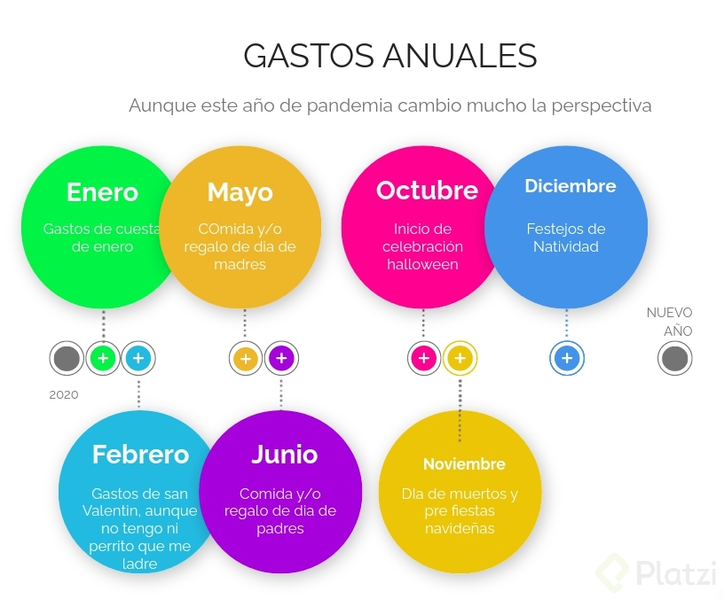

El papel de la inercia
Inercia financiera sucede cuando mes tras mes nos encontramos pagando servicios, tras servicios, no somos conscientes de los ciclos de consumo que tenemos a lo largo del año y es cuando actúa una fuerza externa que nos damos cuenta lo bien o mal que estábamos administrando nuestras finanzas personales.
⠀⠀⠀⠀⠀⠀⠀⠀⠀
⠀⠀⠀⠀⠀⠀⠀⠀⠀
